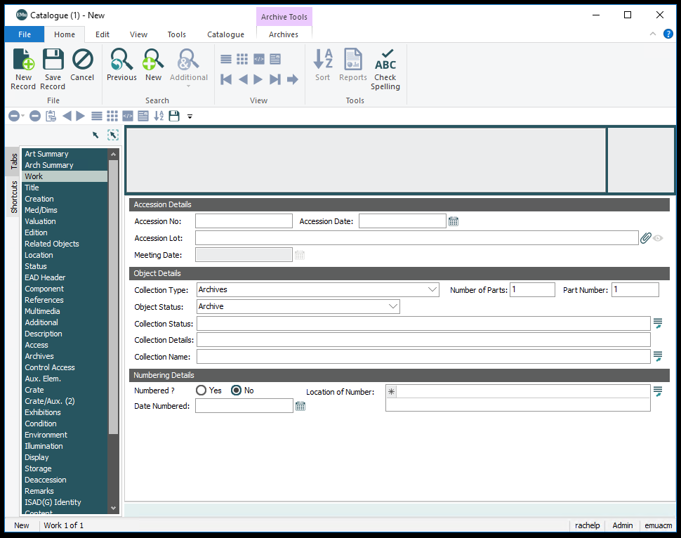
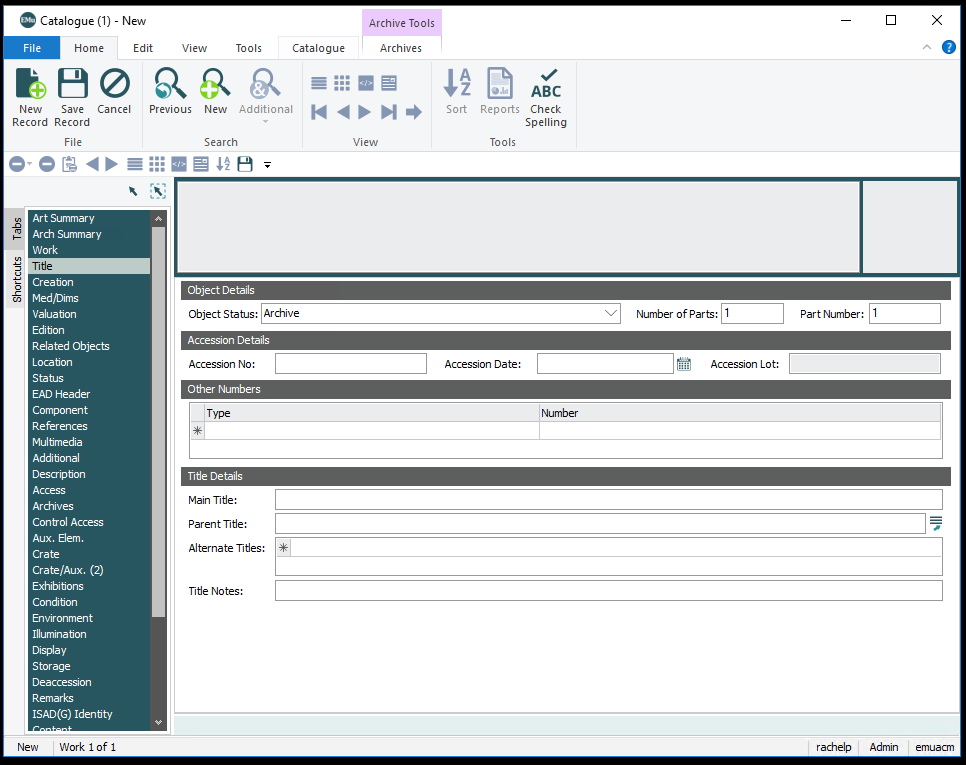
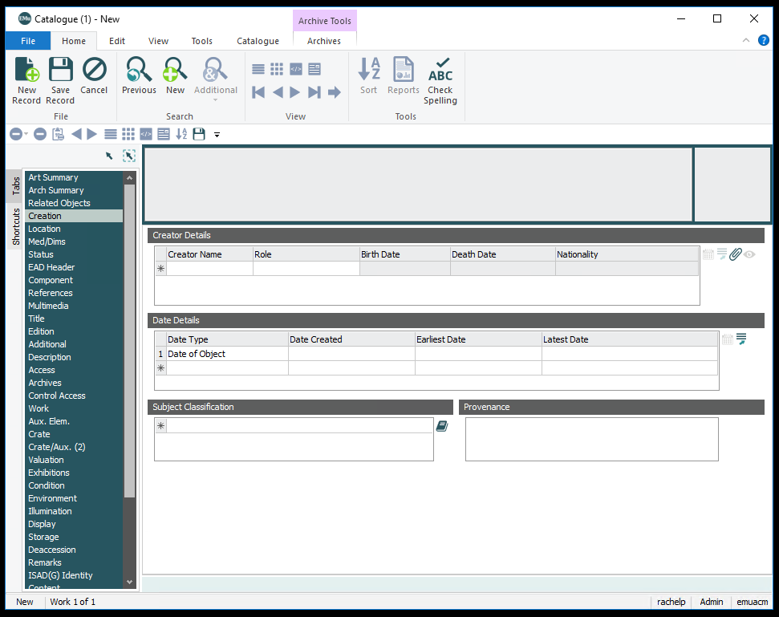
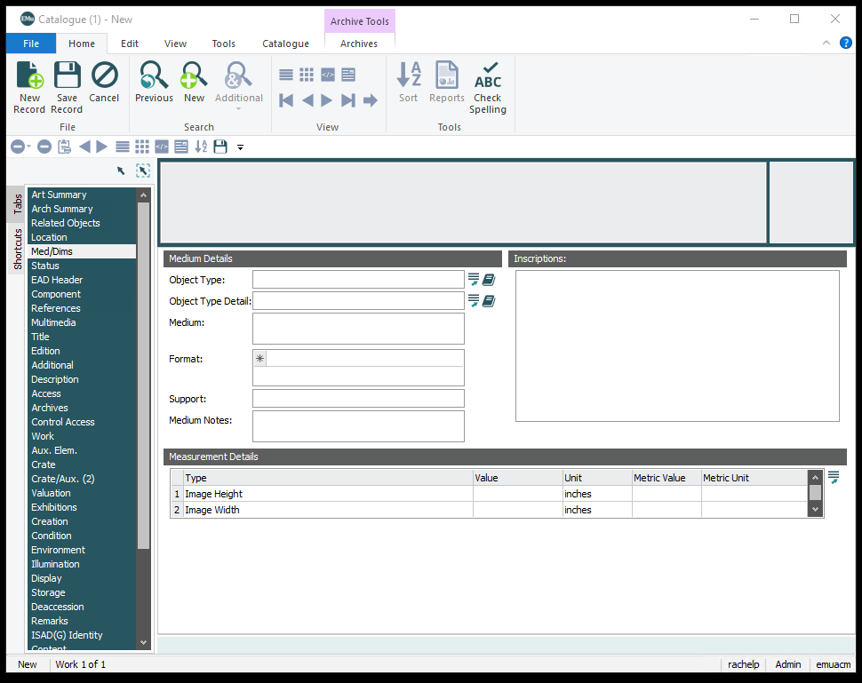

Creating Library Records in the Catalogue
Description
EMu will not be used as a library catalog for the Carter's extensive library collection. EMu will instead be used to describe library objects housed in the vaults or used in exhibitions. This is primarily for tracking of objects. The database of record for library objects is the library catalog maintained in the library department, because of this the library records are not as detailed as art and archival records in EMu.
Instructions for using a record template in EMu
- Check for Artist information
- You will need to know the IRN of the artist or author of the book, so you will need to go to the Parties Module prior to doing anything else.
- Once you are in the Parties Module, search for the artist.
- Write down the IRN on a sheet of paper. If the artist is not a part of the collection, a new Parties record will have to be created.
- Find the last library object in sequence
- Open the Catalogue Module.
- Search for LIB\* in the accession number field.
- Sort the results by selecting HomeàSortàSort by accession number.
- Scroll to the bottom of the search results and highlight the last record.
- Use the Library Record Template
- Once you have highlighted that record, go to Tools-->Templates and select New Library record.
- You will enter the number of records you wish to create in the first box. Please note that these records will be identical to one another with the exception of the accession number, so you will still have to edit the records in EMu if you choose to create multiple at once.
- If the last LIB number used was 150, you will enter 151 into the box. It will use this number as the base accession numbers. If you enter 151 and said that you wanted 10 records, it would create new records with the accession numbers: LIB.151, LIB.152, LIB.154, etc.
- Enter the title of the publication. Understand that for batch records, all works will be given this title.
- Enter the date published. Follow art formatting: n.d. for no date, ca. for circa dates.
- Earliest and Latest dates help with searching. If the date of a publication is 1975, the earliest and latest dates would be 1975. If the work has an uncertain date, you will follow the following guidelines:
- Enter the medium as either “Book” or “Print”. Print mediums will be updated by Fernanda.
- Enter the call number.
- Enter the artist IRN, if you only have an author, enter the author IRN and change the role from “Artist” to “Author” in the record.
- Enter the height of the print or book, record the numeric value only.
- Enter the width of the print or book, record the numeric value only.
- Confirm your information by clicking next. A window will popup with a report of your new records.
Instructions for a batch import
Enter the data into a template found here. Save the template as a new document and use the guidelines below for filling out the spreadsheet. Submit to EMu Admin when complete.
Tabs and fields used
Work
Collection Type
Highest level of EMu object organization. Library materials will always have a Collection Type of "Library".
Title
Object Status
The object's status within the ACM collection. Helps distinguish permanent collection objects from loans, deaccessions, and objects that belong to other museum departments.
- Deaccessioned to library
- Library
Accession Number
Accession Lot Number numbers are assigned to all activities related to objects, such as the purchase, donation, exhibition, or deaccession of an object or group of objects. The number represents the activity itself. For group activities, each object in the acquisition, exhibition, or deaccession is assigned the same Accession Lot Number in order to eliminate repetitive data entry. Numbering schemes vary by type of activity.
Library
Library items are given a LIB, immediately followed by numbers for parts or subparts. These are ordered sequentially, with no indication of year.
Main Title
Title is to be used for all publications and object labels. However, it is the curator’s prerogative to use a different title at any given time.
The Title is recorded by the cataloguer on the cataloguing worksheet. It is the primary name by which the object is known. It may be a transcription of the title listed on the vendor's invoice, inscribed on the object or housing, or recorded in an alternate source of information provided by the artist. The curator may correct or change the Title upon review of these materials. The title is recorded in Chicago style title case (see notes below).
Examples
1961.19 The Broken Rope 1971.38 Clipper Ship "Comet" of New York 1985.37 The Appeal to the People P1984.35.54 Under the El at the Battery
More details regarding title formats can be found here.
Other Numbers
Type
Other numbers used to identify the object.
- ACMAA Library Call Number- Used for prints from library rare book collection.
Number
Other numbers used to identify the object. May contain loan numbers, library call numbers, or former numbers used by the artist. Transcribe most numbers verbatim; for Porter former numbers, replace hyphens with periods.
Example
ACMAA Library Call Number TR.140.469
Creation
Displays catalogue records attached to lot.
Creator Details
Name
Creator of the work. This is an attachment field, go to Parties Module for more information about this field. Multiple can be added.
Role
The role the artist for this particular work. Note that a party can have multiple roles, but this is where the role for the particular piece is recorded. If the artist has multiple roles in the piece, they should be recorded multiple times.
Library materials need an artist, note that this artist can be unknown, and may have additional roles such as author or published by. For more role ideas, please refer to the list of roles here.
Date Details
Type
Depending on the type of object, one or more of the following dates will be recorded:
- Date of Object*
Date
Text date. Use the following formatting rules for creation. For further information on date format please go here.
Earliest
Used for searching. Earliest probable creation date. Look for more details here.
Latest
Used for searching. Latest probable creation date. Look for more details here.
Med/Dims
Medium Details
Medium
Accession Lot Number numbers are assigned to all activities related to objects, such as the purchase, donation, exhibition, or deaccession of an object or group of objects. The number represents the activity itself. For group activities, each object in the acquisition, exhibition, or deaccession is assigned the same Accession Lot Number in order to eliminate repetitive data entry. Numbering schemes vary by type of activity.
Measurement Details
Type
The type of dimension recorded.
| Library Books | Height |
| Width |
Value
Value recorded in a fraction. Round to the nearest 1/16th for works on paper and photographs. Round to the nearest 1/8th for paintings and sculpture.
Unit
Will always be "inches".
Metric Value
Value in centimeters. Preference is to measure both, but you can also use conversion tools to convert value. Round to the nearest tenth.
Metric Unit
Will always be "cm".